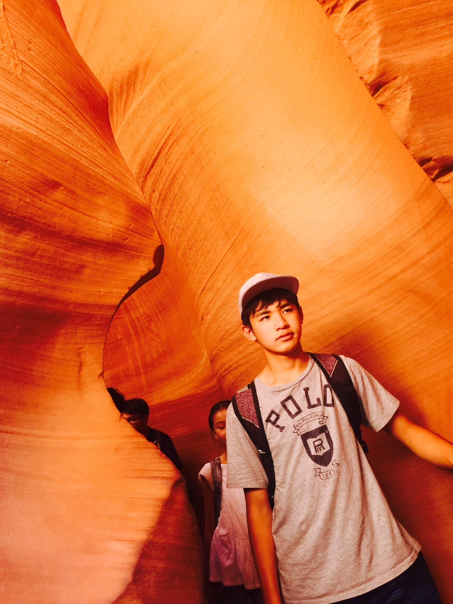

学歴
小学校
碑小学校
アメリカへ引っ越すまで、５年生まで通学していました。今も同級生たちとは仲良くしていただいてます。
中学校
Hyde Middle School

アメリカの小学校は５年制のため、中学校からスタートでした。最初は英語も分からず美術で留年しかけたこともあり、ホームシックならぬジャパンシックになっていたことも。数学は九九をいえるだけで２学年飛び級できました。
高校
1. Cupertino High School

アメリカは高校まで義務教育であり、高校受験もほぼ存在しないため、中学の同級生たちと同じ高校へ進学。ようやく英語にも慣れ、Honor Rollという成績優秀者（GPA3.2以上）に与えられる賞を一度だけ獲得できました。
2. Keio Academy of New York
アメリカの高校は４年制度なので、転入したこの高校で残りの3年を過ごしました。サッカー部が強く、ニューヨーク州ベスト8に入賞しました。また、私はMVPを受賞した際、ローカル紙に掲載させていただいた。ただ学業は散々でした、、、
大学
慶應大学 環境情報学部
内部進学。元々は建築家になりたいと思いこちらの学部を選びましたが、気づいたら脳科学→哲学→プログラミングとやることが変わっていき、現在はアプリ開発を主に行なっている研究会に所属しています。
最初のページに戻る